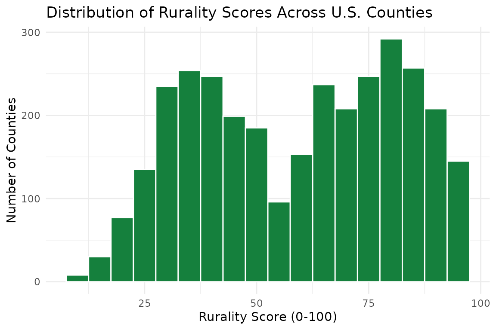

Overview
The rurality package provides rurality classification
data for all U.S. counties and ZIP codes. It bundles USDA Rural-Urban
Continuum Codes (RUCC 2023), Rural-Urban Commuting Area codes (RUCA
2020), and a composite rurality score that combines multiple data
sources into a single 0–100 measure.
The package is designed for researchers who need to classify locations by rurality without manually downloading and reshaping USDA spreadsheets.
Looking up a county
The simplest use case is looking up rurality data for a county by its 5-digit FIPS code:
get_rurality("05031")
#> # A tibble: 1 × 24
#> fips state_fips county_fips state_abbr county_name pop_2020 acs_pop
#> <chr> <chr> <chr> <chr> <chr> <dbl> <dbl>
#> 1 05031 05 031 AR Craighead County 111231 111038
#> # ℹ 17 more variables: land_area_sqmi <dbl>, pop_density <dbl>,
#> # rucc_2023 <int>, rucc_description <chr>, omb_designation <chr>, lat <dbl>,
#> # lng <dbl>, dist_large_metro <dbl>, dist_medium_metro <dbl>,
#> # dist_small_metro <dbl>, rucc_score <dbl>, density_score <dbl>,
#> # distance_score <dbl>, rurality_score <dbl>, rurality_classification <chr>,
#> # median_income <dbl>, median_age <dbl>If you just need the score or the RUCC code:
rurality_score("05031")
#> 3
#> 40
get_rucc("05031")
#> [1] 3Multiple FIPS codes work too:
rurality_score(c("05031", "06037", "48453"))
#> 3 1 1
#> 40 17 23Looking up a ZIP code
RUCA codes are available at the ZIP/ZCTA level:
get_ruca("72401")
#> # A tibble: 1 × 4
#> zip state primary_ruca secondary_ruca
#> <chr> <chr> <int> <int>
#> 1 72401 AR 1 1
get_ruca(c("72401", "90210", "59801"))
#> # A tibble: 3 × 4
#> zip state primary_ruca secondary_ruca
#> <chr> <chr> <int> <int>
#> 1 59801 MT 1 1
#> 2 72401 AR 1 1
#> 3 90210 CA 1 1Merging onto your data
The most common research workflow is merging rurality data onto an
existing dataset. The add_rurality() function handles
this:
my_data <- data.frame(
fips = c("05031", "06037", "48453", "30063"),
outcome = c(0.72, 0.41, 0.58, 0.89)
)
my_data |> add_rurality()
#> fips outcome rurality_score rurality_classification rucc_2023
#> 1 05031 0.72 40 Mixed 3
#> 2 06037 0.41 17 Urban 1
#> 3 48453 0.58 23 Suburban 1
#> 4 30063 0.89 45 Mixed 3By default, three columns are added: rurality_score,
rurality_classification, and rucc_2023. Use
vars = "all" for the full set:
my_data |> add_rurality(vars = "all") |> glimpse()
#> Rows: 4
#> Columns: 25
#> $ fips <chr> "05031", "06037", "48453", "30063"
#> $ outcome <dbl> 0.72, 0.41, 0.58, 0.89
#> $ state_fips <chr> "05", "06", "48", "30"
#> $ county_fips <chr> "031", "037", "453", "063"
#> $ state_abbr <chr> "AR", "CA", "TX", "MT"
#> $ county_name <chr> "Craighead County", "Los Angeles County", "Tra…
#> $ pop_2020 <dbl> 111231, 10014009, 1290188, 117922
#> $ acs_pop <dbl> 111038, 9936690, 1289054, 118541
#> $ land_area_sqmi <dbl> 707.1583, 4059.2816, 994.0526, 2593.0085
#> $ pop_density <dbl> 157.0, 2447.9, 1296.8, 45.7
#> $ rucc_2023 <int> 3, 1, 1, 3
#> $ rucc_description <chr> "Metro - Counties in metro areas of fewer than…
#> $ omb_designation <chr> "Metropolitan", "Metropolitan", "Metropolitan"…
#> $ lat <dbl> 35.83091, 34.32080, 30.33436, 47.03601
#> $ lng <dbl> -90.63290, -118.22485, -97.78182, -113.92470
#> $ dist_large_metro <dbl> 382.3440, 18.5902, 149.6074, 395.5553
#> $ dist_medium_metro <dbl> 119.7631, 188.6871, 441.7468, 169.4502
#> $ dist_small_metro <dbl> 4.076085, 377.962597, 558.870426, 11.787297
#> $ rucc_score <dbl> 28, 8, 8, 28
#> $ density_score <dbl> 45, 15, 22, 59
#> $ distance_score <dbl> 69, 51, 75, 78
#> $ rurality_score <dbl> 40, 17, 23, 45
#> $ rurality_classification <chr> "Mixed", "Urban", "Suburban", "Mixed"
#> $ median_income <dbl> 55169, 83411, 92731, 66840
#> $ median_age <dbl> 34.4, 37.4, 35.1, 36.7If your FIPS column has a different name, specify it:
other_data <- data.frame(county_fips = c("05031", "06037"), y = 1:2)
other_data |> add_rurality(fips_col = "county_fips")
#> county_fips y rurality_score rurality_classification rucc_2023
#> 1 05031 1 40 Mixed 3
#> 2 06037 2 17 Urban 1Classifying scores
The classify_rurality() function converts numeric scores
to labels:
classify_rurality(c(10, 30, 50, 70, 90))
#> [1] "Urban" "Suburban" "Mixed" "Rural" "Very Rural"The thresholds are:
| Score | Classification |
|---|---|
| 80–100 | Very Rural |
| 60–79 | Rural |
| 40–59 | Mixed |
| 20–39 | Suburban |
| 0–19 | Urban |
Browsing the full dataset
The county_rurality dataset contains all 3,235 U.S.
counties:
county_rurality
#> # A tibble: 3,235 × 24
#> fips state_fips county_fips state_abbr county_name pop_2020 acs_pop
#> <chr> <chr> <chr> <chr> <chr> <dbl> <dbl>
#> 1 01001 01 001 AL Autauga County 58805 58761
#> 2 01003 01 003 AL Baldwin County 231767 233420
#> 3 01005 01 005 AL Barbour County 25223 24877
#> 4 01007 01 007 AL Bibb County 22293 22251
#> 5 01009 01 009 AL Blount County 59134 59077
#> 6 01011 01 011 AL Bullock County 10357 10328
#> 7 01013 01 013 AL Butler County 19051 18981
#> 8 01015 01 015 AL Calhoun County 116441 116162
#> 9 01017 01 017 AL Chambers County 34772 34612
#> 10 01019 01 019 AL Cherokee County 24971 25069
#> # ℹ 3,225 more rows
#> # ℹ 17 more variables: land_area_sqmi <dbl>, pop_density <dbl>,
#> # rucc_2023 <int>, rucc_description <chr>, omb_designation <chr>, lat <dbl>,
#> # lng <dbl>, dist_large_metro <dbl>, dist_medium_metro <dbl>,
#> # dist_small_metro <dbl>, rucc_score <dbl>, density_score <dbl>,
#> # distance_score <dbl>, rurality_score <dbl>, rurality_classification <chr>,
#> # median_income <dbl>, median_age <dbl>Filter to a state:
county_rurality |>
filter(state_abbr == "AR") |>
select(county_name, rurality_score, rurality_classification, rucc_2023) |>
arrange(desc(rurality_score)) |>
head(10)
#> # A tibble: 10 × 4
#> county_name rurality_score rurality_classification rucc_2023
#> <chr> <dbl> <chr> <int>
#> 1 Calhoun County 85 Very Rural 9
#> 2 Chicot County 85 Very Rural 9
#> 3 Newton County 85 Very Rural 9
#> 4 Searcy County 85 Very Rural 9
#> 5 Desha County 84 Very Rural 9
#> 6 Fulton County 84 Very Rural 9
#> 7 Monroe County 84 Very Rural 9
#> 8 Clay County 83 Very Rural 9
#> 9 Lincoln County 83 Very Rural 9
#> 10 Marion County 83 Very Rural 9Score distribution
if (requireNamespace("ggplot2", quietly = TRUE)) {
ggplot2::ggplot(county_rurality, ggplot2::aes(x = rurality_score)) +
ggplot2::geom_histogram(binwidth = 5, fill = "#15803d", color = "white") +
ggplot2::labs(
title = "Distribution of Rurality Scores Across U.S. Counties",
x = "Rurality Score (0-100)",
y = "Number of Counties"
) +
ggplot2::theme_minimal()
}
#> Warning: Removed 22 rows containing non-finite outside the scale range
#> (`stat_bin()`).
Methodology
The composite rurality score is a weighted average of three components:
| Component | Weight | Source |
|---|---|---|
| RUCC score | 55% | USDA Economic Research Service, 2023 |
| Population density | 28% | Census ACS 2022 5-year estimates |
| Distance to metro | 17% | Haversine distance to nearest metro area |
For full details, see rurality.app.
Citation
citation("rurality")
#> To cite package 'rurality' in publications use:
#>
#> Wimpy C (2026). _rurality: Rurality Classification and Scoring for
#> U.S. Counties and ZIP Codes_. R package version 0.1.0,
#> <https://rurality.app>.
#>
#> A BibTeX entry for LaTeX users is
#>
#> @Manual{,
#> title = {rurality: Rurality Classification and Scoring for U.S. Counties and ZIP Codes},
#> author = {Cameron Wimpy},
#> year = {2026},
#> url = {https://rurality.app},
#> note = {R package version 0.1.0},
#> }